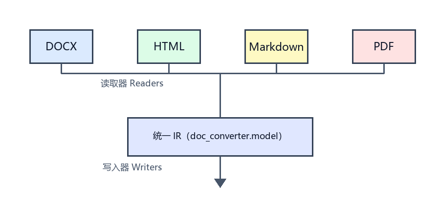

文档转换助手示例文档
本文档用于演示 doc-converter 对四种格式的处理能力，涵盖标题、列表、表格、超链接、图片、流程图（Mermaid）与代码块。
功能特性
- 支持 PDF、DOCX、HTML、Markdown 任意互转
- 保留标题、段落、列表、表格等结构
- 正确处理图片、流程图与嵌入附件
- 图片保存为文件并在目标格式中引用
- 流程结构转换为目标格式可表达的形式
- 支持单文件与批量转换
结构对比表
| 格式 | 结构保留 | 图片 | 流程图 | 附件 |
|---|
| PDF | 启发式重建 | 裁剪导出 | 转为文本结构 | EmbeddedFile |
| DOCX | 完整 | 嵌入 | 组合形状提取 | OLE 对象 |
| HTML | 完整 | 文件引用 | Mermaid 渲染 | 链接引用 |
| Markdown | 完整 | 文件引用 | Mermaid 代码块 | 链接引用 |
流程图示例
graph TD
A["读取源文档"] --> B["解析为统一 IR"]
B --> C{"目标格式"}
C -->|PDF| D["HTML 排版引擎"]
C -->|DOCX| E["python-docx 写入"]
C -->|Markdown| F["Mermaid + 管道表格"]
C -->|HTML| G["语义化 HTML"]
查看流程节点文本
- 读取源文档
- 解析为统一 IR
- 目标格式
- HTML 排版引擎
- python-docx 写入
- Mermaid + 管道表格
- 语义化 HTML
代码示例
from doc_converter import convert
result = convert("sample.docx", target="md", output="out/")
print(result.output_path)
图片与链接

项目地址：https://github.com/example/doc-converter
引用与提示
提示：PDF 是版式驱动格式，标题层级由字号启发式推断。
—— 由示例生成器创建 ——